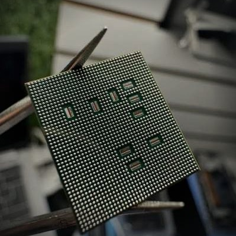

From our bench, not a stock library
Every photo on this page is our own work. Reballed chips, split sandwich boards, transplanted CPUs: the jobs other shops send away land on this bench in Kingsgrove.
Repair shops: send us your board work